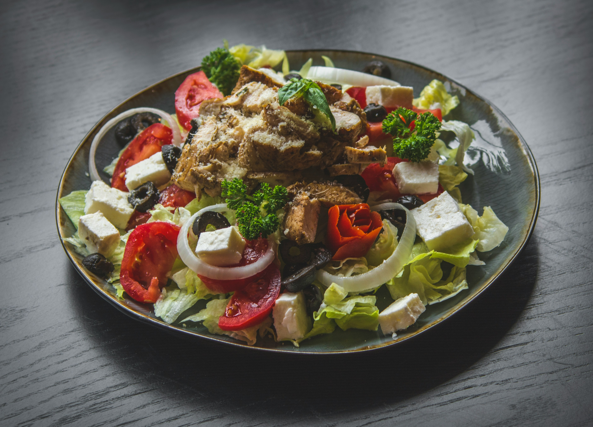
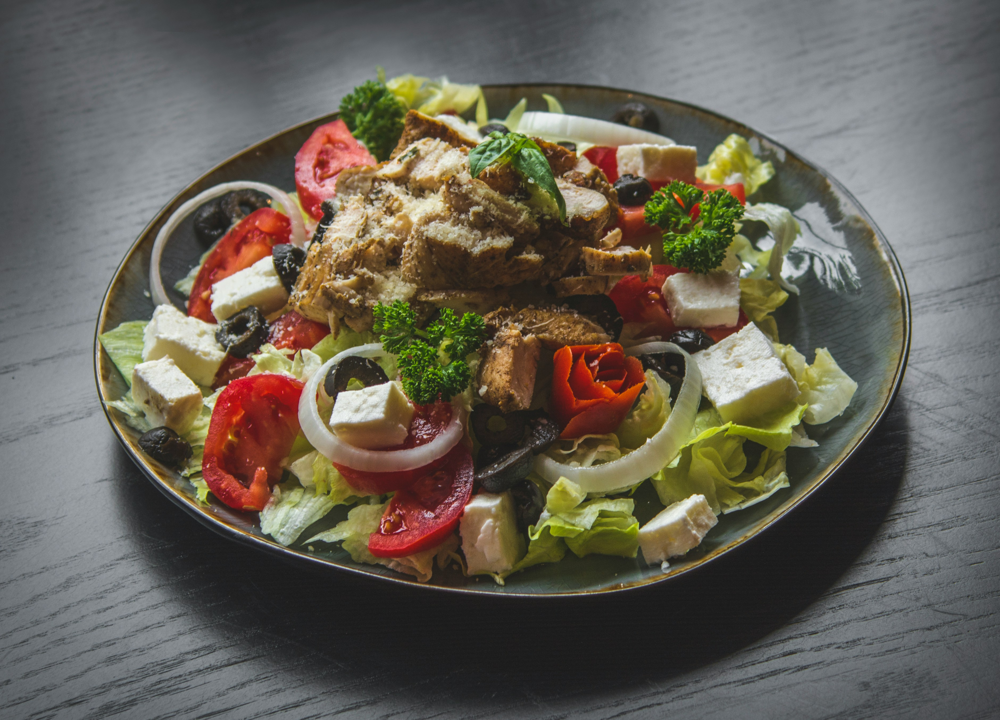

Food Making Process


Our Photo Gallery
A quartet of culinary masterpieces awaits, each dish a symphony of flavor and texture. From succulent steaks to velvety soups, every bite is a journey for the senses. Imagine a plate piled high with tender, slow-roasted short ribs, glazed with a rich, caramelized sauce. Or perhaps a bowl of creamy lobster bisque, topped with a swirl of fresh cream and a sprinkle of chives.
 
